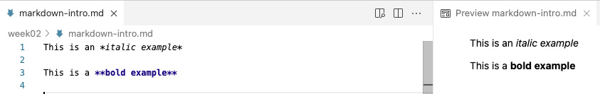

An introduction to Markdown
Practical Computing Skills for Omics Data (PLNTPTH 5006)
Jelmer Poelstra
September 02, 2026

Introduction
Context
This session introduces Markdown for research documentation.
- This week’s first lecture emphasized the importance of documenting your research.
- Now you’ll learn the Markdown mini-language, a great option for writing that documentation — and more.
Learning goals
You will learn:
- What Markdown is and why it’s useful.
- How to preview “rendered” Markdown files in VS Code.
- The most common Markdown syntax elements.
- Some quirks in how Markdown treats whitespace.
First steps with Markdown
What is Markdown?
A simple markup language
- Markdown is a lightweight “markup language”. You write in plain text, adding simple formatting instructions using visible characters.
- Your plain-text source Markdown file can be converted into various output formats, like HTML or PDF.
- This process of conversion is called “rendering”, during which the formatting instructions are applied (and the visible characters are removed).
A first example
Surrounding text with single or double asterisks (*) applies italic and bold formatting, respectively:
- *italic example* produces italic example
- **bold example** produces bold example
We refer to these constructs (* for italic, etc.) as the “syntax” of the language.
Markdown in VS Code
Markdown files have extension .md, and when you save a file with that extension in VS Code:
- Some formatting is automatically applied in the editor.
- You can open a live Preview of the rendered version, using the icon in the top-right of the editor (shown on the right).

TODO replace screenshot
Your turn
In the previous session, you created a file
2d_markdown.md. Type the following text in this file:
- As shown in the previous slide, that should look as follows in VS Code:
Why use Markdown? It is:
Easy to use
- Easy to write: you only need to know a dozen or so syntax constructs to get started.
- Easy to read in source form (and VS Code applies some formatting even there).
Very widely used
The de facto standard for documentation in computational fields.
Has become even more prevalent with the rise of GenAI: chatbots write their responses in Markdown, and AI coding tools are configured with Markdown files (e.g.,
CLAUDE.md).
Powerful and versatile
- One source file can be converted to many output formats.
Markdown extensions enable:
Executable code in documents, such as in Quarto (covered in week 14)
Creating slides (such as these!) and websites (such as this one!)
The most common Markdown syntax
Headers
To create headers, use one or more # characters, followed by a space:
- One
#makes a level-1 header (largest; use only for document titles) - Two
##makes a level-2 header - Three
###makes a level-3 header — and so forth for smaller headers
TODO - add screenshot
Headers
Let’s build a complete skeleton of a Markdown document, using the following headers:
Lists
Rendered as:
- Pine Warbler
- Palm Warbler
Do you notice anything striking about the second example? (Click to see the answer)
Even though the last two items are both numbered “2.”, they are rendered as “2.” and “3.” in the output. Markdown automatically numbers ordered lists, so you don’t have to worry about numbering them correctly in the source.
Overview of syntax so far
| Syntax/source | Result/rendered output |
|---|---|
| *italic* | italic text (or use an underscore: _italic_) |
| **bold** | bold text |
| # My Title | Header level 1 (largest) |
| ## My Section | Header level 2 (smaller) |
| - List item | Unordered (bulleted) list |
| 1. List item | Ordered (numbered) list |
Links and blockquotes
Type:
Mind the order in a [text](url) link: the [link text] comes first, and then the (URL).
Rendered as:
The docs are here.
Or show the URL: https://www.markdownguide.org
A blockquote is useful to highlight text, such as a quote from a paper.
Your document so far
TODO
Overview of most common syntax
| Syntax/source | Result/rendered output |
|---|---|
| *italic* | italic text (or use an underscore: _italic_) |
| **bold** | bold text |
| # My Title | Header level 1 (largest) |
| ## My Section | Header level 2 (smaller) |
| - List item | Unordered (bulleted) list |
| 1. List item | Ordered (numbered) list |
| <https://website.com> | Clickable link with visible URL: https://website.com |
| [link text](url) | Clickable link with “hidden” URL: link text |
| > Text | Blockquote (like quoted text in emails) |
| --- | Horizontal rule (use 3+ dashes) |
Your turn
Try to create the following content below the ## Exercise header in your Markdown file:
TODO
Code formatting and whitespace
Code formatting
What is code formatting
Applying “code formatting” to text means that it:
- Is displayed in a monospaced font, often with a different text and/or background color
- May have language-specific syntax highlighting
How to apply it
Surround text with backticks (`): single backticks for inline code, and triple backticks for code blocks.
Take a moment to find the backtick key on your keyboard (usually above the Tab key).
Overview of code-formatting syntax
| Syntax/source | Result/rendered output |
|---|---|
| `inline code` | “Code-formatted” text for inline use: inline code |
| ```bash code ``` |
Code block with bash syntax highlighting |
| ```r code ``` |
Code block with r syntax highlighting |
``` code ``` |
Generic/language-agnostic code block |
Leave whitespace around syntax elements
A blank line between sections
Always leave a blank line between different elements, such as headers, lists, and regular paragraphs, to guarantee they are interpreted correctly.
What happened to the list on the right? (Click to see the answer)
Not only did the items not become a bulleted list, they were also collapsed into a single line: we’ll see why now.
Single line breaks are ignored
A line break in the source does not create a line break in the output:
Recap
What Markdown is
A lightweight markup language: plain text plus visible formatting characters.
Your source file is rendered into HTML, PDF, and more — preview it in VS Code.
The core syntax
*italic*, **bold**, # headers, - and 1. lists, [text](url) links, and > blockquotes.
Backticks for code: single for inline, triple for blocks.
Whitespace matters
Leave a blank line between elements, and a space after # and -.
Single line breaks are ignored — start a new paragraph instead.
Questions?
Optional self-study material
Creating tables
Creating tables in Markdown is a bit trickier than the other elements we’ve seen. Use vertical bars | and dashes - like so:
Inserting images/figures
Images can be inserted using the following syntax:
- The syntax is the same as for a link, but with a leading
!. - The caption is optional:
also works. - The path is interpreted relative to the Markdown file,
so an image in a subfolder needs e.g..
The VS Code Preview will show the image, so it’s an easy way to check that you got the path right.
Forcing a single linebreak
You can force a single linebreak (as opposed to a new paragraph) by adding
a backslash \ after the last character on a line:
Some white space is “collapsed”
Multiple consecutive spaces or blank lines are “collapsed” into a single one:
Forcing additional space between paragraphs
We saw earlier that Markdown collapses multiple consecutive spaces or blank lines
into a single one. If you want to force additional space between paragraphs,
you’ll have to resort to an HTML tag — each <br> tag forces a linebreak:
Rendered as:
One
word
per line and
several blank lines.
You can use any HTML markup in Markdown! Maybe not everyone’s cup of tea,
but this is one way in which Markdown is very versatile.